2INF · Laboratorio professionale · lunedì 09/11/2026 · ora 6 (13-14) · ognuno sul suo PC · si consegna la scheda con un bottone
Ora 6 · Strumenti di amministrazione di Windows
La pagina viene aggiornata spesso durante la lezione: premi F5 per vedere la versione nuova.
Hai un dubbio sul lavoro? Scrivi all'assistente in fondo alla pagina: risponde subito. Il Professore serve per un PC rotto.
Chi sei?
Scrivi nome e cognome e scegli il numero del tuo PC (adesivo sul PC).
Sei bloccato? Scrivi la domanda nella casella dell'assistente in fondo alla pagina: ti risponde subito. Alza la mano solo se il PC non funziona.
La teoria in schede
Leggi dall'alto in basso. Una idea per scheda.
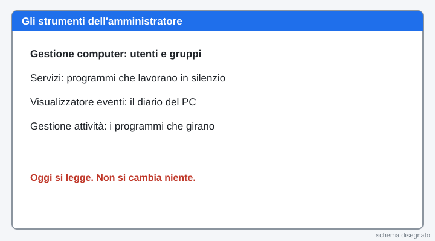
1. Chi amministra il PC
Un amministratore è la persona che può cambiare il PC. Usa strumenti pronti di Windows per guardare come sta. Oggi guardi e basta: leggere non rompe niente.
2. Utenti e gruppi
Un utente è una persona che usa il PC. Un gruppo è un insieme di utenti con gli stessi permessi. Il gruppo Administrators può cambiare tutto. Il gruppo Users usa i programmi ma non cambia il sistema.
3. Servizi e registro eventi
Un servizio è un programma che lavora in silenzio, anche se nessuno lo apre. Ha uno stato (In esecuzione o fermo) e un tipo di avvio (Automatico, Manuale o Disabilitato). Il registro eventi è il diario del PC: ogni riga ha un livello (Informazioni, Avviso, Errore) e un numero, l'ID. L'ID 12 dice che Windows si è avviato.
4. Processi e memoria
Un processo è un programma che sta girando adesso. Ogni processo usa memoria (RAM). Gestione attività li elenca e li ordina. «Termina attività» chiude un processo: si usa solo su un programma che hai aperto tu e che non risponde.
Parole nuove
| Utente | una persona che usa il PC |
|---|---|
| Gruppo | insieme di utenti con gli stessi permessi |
| Administrators | il gruppo di chi può cambiare tutto |
| Users | il gruppo di chi usa il PC senza cambiare il sistema |
| Servizio | programma che lavora in silenzio in sottofondo |
| Tipo di avvio | quando parte il servizio: Automatico, Manuale, Disabilitato |
| Evento | una riga del diario del PC |
| ID evento | il numero che dice che cosa è successo |
| Processo | un programma che sta girando adesso |
| Termina attività | il bottone che chiude un processo |
1Apri Gestione computer
Clicca con il tasto destro sul pulsante Start (in basso a sinistra). Nel menu clicca Gestione computer.
Cosa devi vedere: Si apre la finestra «Gestione computer» con un albero a sinistra.

2Leggi l'elenco degli utenti
A sinistra clicca Utenti e gruppi locali, poi Utenti. Leggi i nomi. Scrivili nella scheda in fondo.
Se la voce «Utenti e gruppi locali» non c'è: scrivi «non c'è» nella scheda e vai al passo 5. Non è un errore del PC.
Solo guardare: non cambiare niente.
Cosa devi vedere: Un elenco con almeno due utenti: un amministratore e un utente standard.
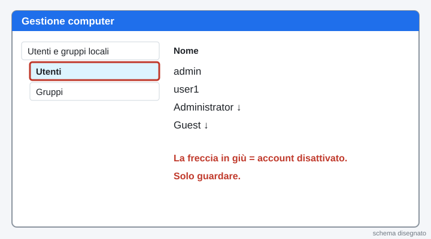
3Leggi chi sta nei gruppi
A sinistra clicca Gruppi. Fai doppio clic su Administrators e leggi i membri. Premi Annulla.
Fai doppio clic su Users, leggi i membri e premi Annulla. Scrivi i nomi nella scheda.
Cosa devi vedere: Due liste di nomi. Premi sempre Annulla: non si cambia niente.
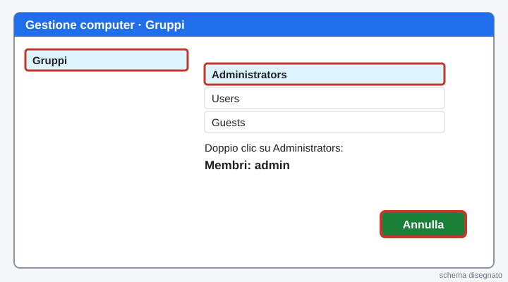
4Ripasso veloce
Quale gruppo può cambiare tutto sul PC?
Che cos'è un gruppo?
Se la voce «Utenti e gruppi locali» non c'è, che cosa fai?
Cosa devi vedere: tre risposte giuste in verde.
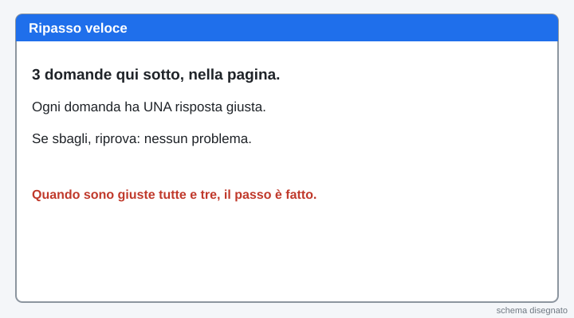
5Apri Servizi
Clicca Start, scrivi Servizi e premi Invio.
Cosa devi vedere: Si apre la finestra «Servizi (locale)» con una lista lunga.
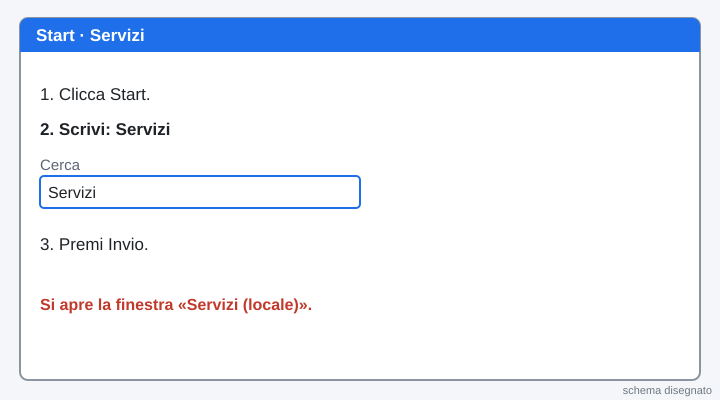
6Leggi tre servizi
Scegli tre servizi dalla lista. Per ognuno leggi tre colonne: Nome, Stato e Tipo di avvio.
Scrivi nella scheda i tre nomi con stato e tipo di avvio. Se lo Stato è vuoto, il servizio non sta andando adesso.
Non fermare nessun servizio. Solo guardare.
Cosa devi vedere: Tre servizi con stato (In esecuzione o vuoto) e tipo di avvio (Automatico, Manuale o Disabilitato).
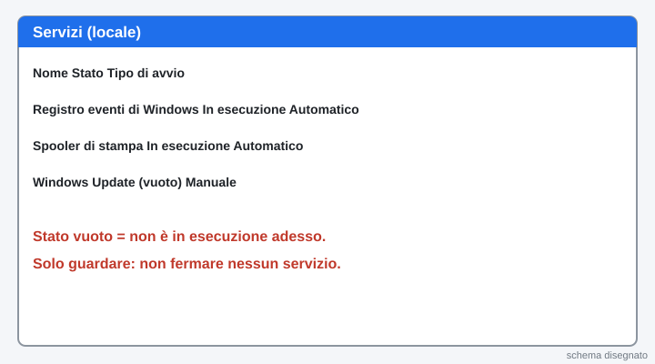
7Leggi la descrizione di un servizio
Fai doppio clic su uno dei tre servizi. Nella scheda Generale leggi la Descrizione. Scrivila a parole tue nella scheda.
Premi Annulla per chiudere. Non premere Arresta.
Cosa devi vedere: Una frase di descrizione. Poi la finestra è chiusa e il servizio è come prima.
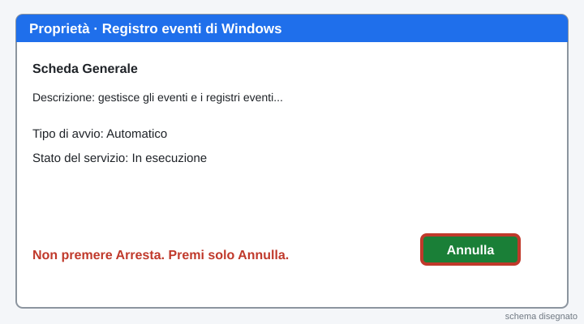
8Apri il Visualizzatore eventi
Clicca con il tasto destro su Start. Clicca Visualizzatore eventi.
A sinistra clicca la freccia di Registri di Windows e poi clicca Sistema.
Cosa devi vedere: Al centro c'è una lista lunga di eventi, con Livello, Data e ora, Origine e ID.
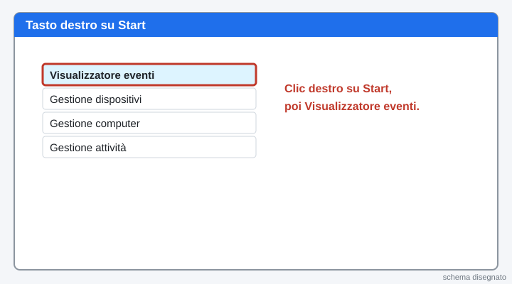
9Leggi un evento informativo
Nella lista cerca una riga con Livello Informazioni. Meglio ancora una riga con ID 12: vuol dire «Windows si è avviato».
Fai clic sulla riga: sotto leggi la frase. Scrivi nella scheda Origine, ID e la frase.
Cosa devi vedere: Una riga «Informazioni» con un ID (per esempio 12) e una frase sotto.
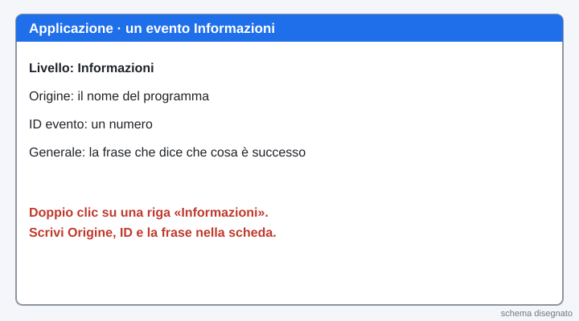
10Leggi un evento di errore
Nel Visualizzatore eventi, a destra, clicca Filtra registro corrente. Spunta Errore e premi OK.
Clicca una riga e leggi Origine e ID. Scrivili nella scheda. Se non ci sono errori, scrivi «non ci sono errori».
Un errore ogni tanto è normale: non vuol dire che il PC è rotto.
Cosa devi vedere: Una riga con Livello «Errore», oppure la lista vuota.
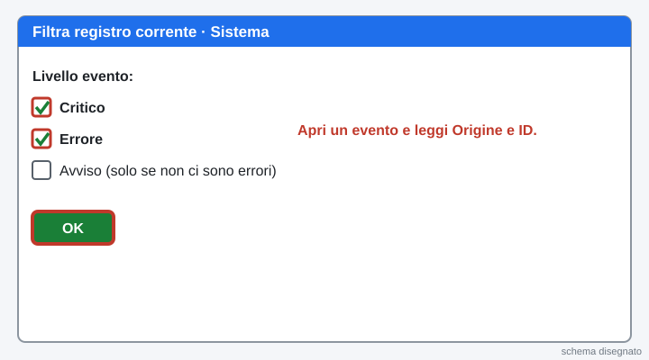
11Apri Gestione attività con Blocco note e Paint
Clicca Start, scrivi Blocco note e premi Invio. Poi clicca Start, scrivi Paint e premi Invio.
Premi insieme Ctrl, Maiusc e Esc. Se la finestra è piccola, clicca Più dettagli in basso.
Cosa devi vedere: Gestione attività è aperta. Nella lista ci sono Blocco note e Paint.
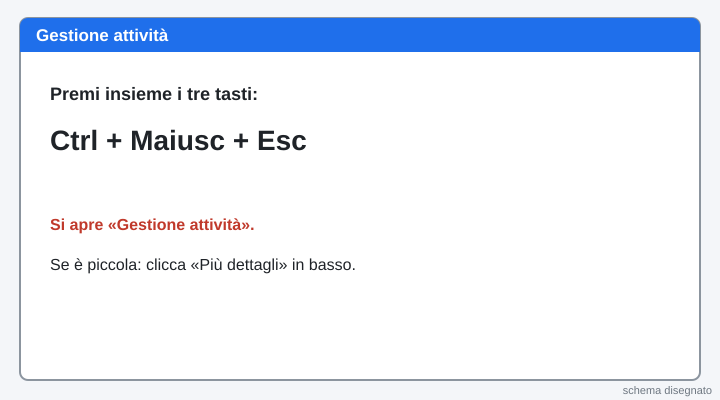
12Ordina per Memoria
Nella scheda Processi clicca l'intestazione Memoria. Il processo che usa di più va in alto.
Scrivi nella scheda il nome del processo in alto e i suoi MB. Poi trova Blocco note e Paint e guarda quanta memoria usano.
Cosa devi vedere: In alto c'è il processo con più memoria. Blocco note e Paint usano poco.
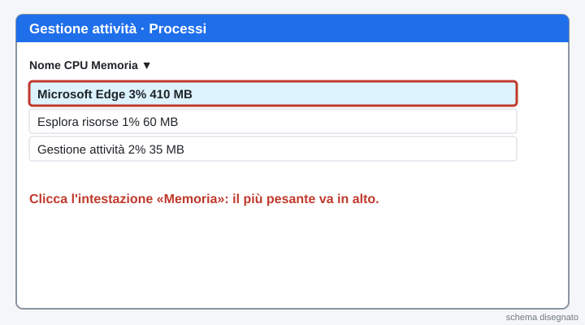
13Termina Paint
In Gestione attività clicca Paint. Poi premi il bottone Termina attività in basso a destra.
Solo Paint, che hai aperto tu. Non terminare altri processi.
Cosa devi vedere: Paint sparisce dall'elenco. Blocco note è ancora aperto.
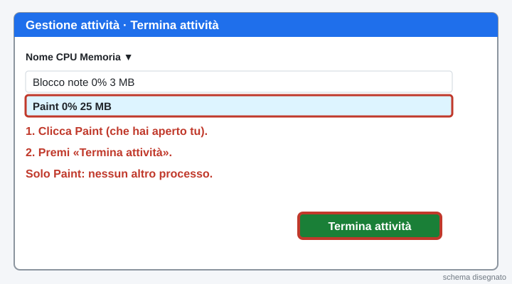
14Apri Monitoraggio risorse
In Gestione attività clicca la scheda Prestazioni. In fondo clicca Apri Monitoraggio risorse.
Clicca la scheda Memoria. In basso leggi Installata. Scrivila nella scheda.
Cosa devi vedere: Un numero in MB alla voce «Installata» (per esempio 4096 MB = 4 GB).
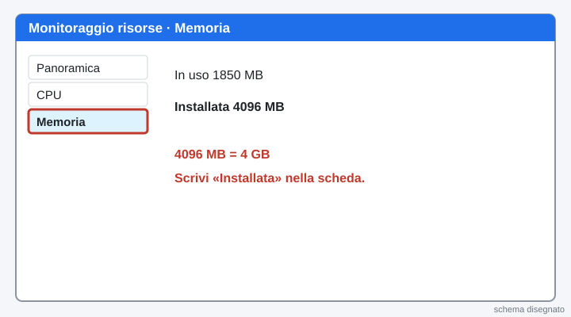
15Fallo tuo: spiega un servizio
Torna in Servizi e scegli un servizio che non hai ancora letto. Scrivi nella scheda il nome, lo stato, il tipo di avvio e a che cosa serve.
Se non lo sai, chiedi all'assistente in fondo alla pagina.
Cosa devi vedere: Hai scelto un servizio tuo e hai scritto a che cosa serve.
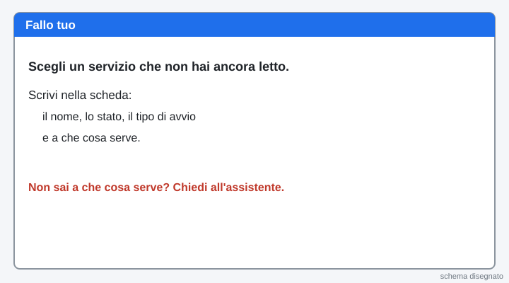
16Quiz su Moduli (10 domande, servono 7 giuste)
Premi il bottone verde: si apre il quiz in una scheda nuova. Dove c'è «scegli 2 risposte» metti DUE crocette. Puoi rifarlo: vale il migliore.
Apri il quiz su ModuliCosa devi vedere: Alla fine del quiz torna a questa pagina.

17Mostralo: spiegalo al compagno
Racconta al compagno in 30 secondi: la differenza tra utente e gruppo, che cos'è un servizio, che cos'è l'ID 12 e come ordini i processi per Memoria.
Cosa devi vedere: Se sai spiegarlo con parole tue, l'hai capito.
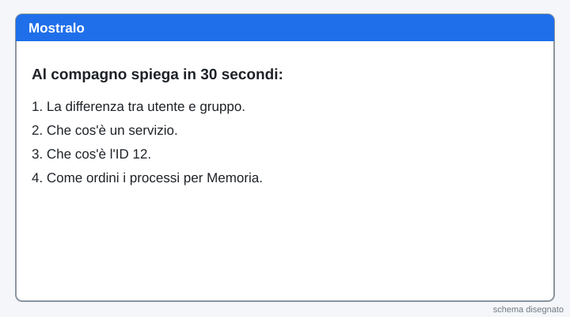
18Scheda e Manda al prof
Compila la scheda qui sotto e premi il bottone verde Manda al prof. Un clic solo.
Se il bottone non funziona: premilo di nuovo tra un minuto. La scheda resta salvata in questa pagina. Se ancora non va, scrivi all'assistente.
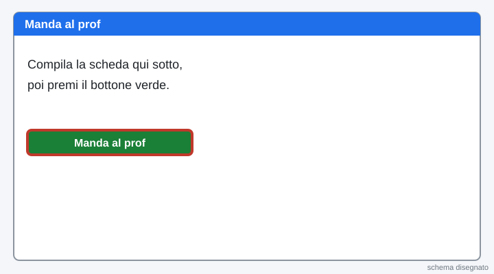
La pagina viene aggiornata spesso durante la lezione: premi F5 per vedere la versione nuova.